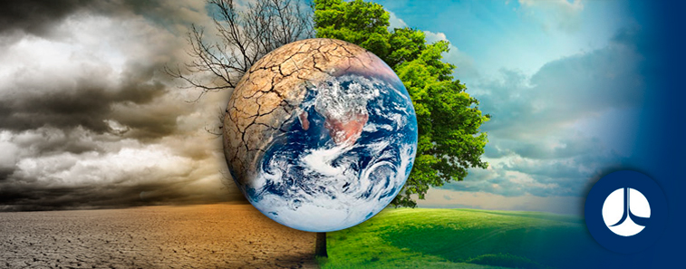
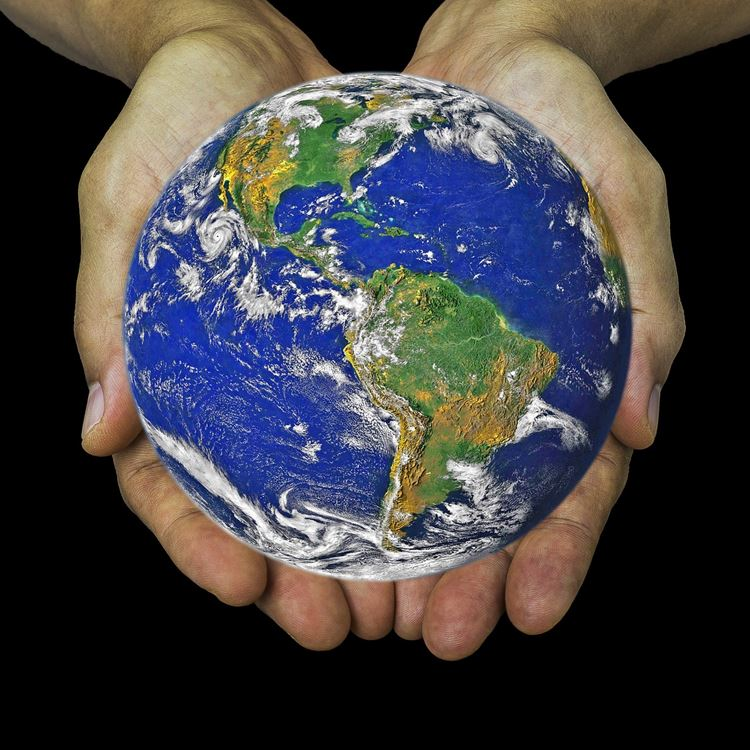
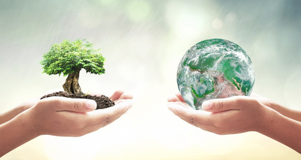

Día Internacional de la madre tierra 22 de abril
Realizado por
Marco Sánchez Contreras
4° "H"
Especialidad
Programación
Submódulo
Desarrolla Aplicaciones Móviles
Docente
Lic.José Antonio Gómez Hernandez
4° "H"
Programación
Desarrolla Aplicaciones Móviles
Lic.José Antonio Gómez Hernandez
Celebramos el Día internacional de la madre tierra para recordar que el planeta y sus ecosistemas nos dan la vida y el sustento. Con este día, asumimos, además, la responsabilidad colectiva, como nos recordaba la Declaración de Río de 1992, de fomentar esta atmonía con la naturaleza y la madre tierra. Este día nos brinda también la oportunidad de concienciar a todos los habitantes del planeta acerca de lor problemas que afectan a la tierra y a las diferentes formas de vida que en él se desarrollan.
El origen de este día, celebrado mundialmente (aunque no en todas partes), se encuentra en Estados Unidos, durante los 70. Y está asociado, sin duda, a un nombre: Gaylord Nelson. La historia cuenta (a pesar de los curiosos rumores sobre Lenin) que fue este político quién aprovechó un miércoles para organizar una manifestación en defensa del medio ambiente y el ecologismo. Un momento muy estudiado y que venía cociéndose desde la década de los 60 debido a la creciente irresponsabilidad ambiental del gobierno de Estados Unidos. Ya habían gérmenes plantados desde la comunidad científica y estudiantil. Ese miércoles los estudiantes y trabajadores se unieron en una manifestación pacífica que pretendía rendir homenaje y mostrar la preocupación colectiva sobre temas como el medio ambiente, la superpoblación o la conservación de la biodiversidad.
La Tierra (del latín Terra, deidad romana equivalente a Gea, diosa griega de la feminidad y la fecundidad) es un planeta del sistema solar que gira alrededor de su estrella el Sol en la tercera órbita más interna. Es el más denso y el quinto mayor de los ocho planetas del sistema solar. También es el mayor de los cuatro terrestres o rocosos. La superficie terrestre o corteza está dividida en varias placas tectónicas que se deslizan sobre el magma durante periodos de varios millones de años. La superficie está cubierta por continentes e islas; estos poseen varios lagos, ríos y otras fuentes de agua, que junto con los océanos de agua salada que representan cerca del 71 % de la superficie constituyen la hidrósfera. No se conoce ningún otro planeta con este equilibrio de agua líquida, que es indispensable para cualquier tipo de vida conocida. Los polos de la Tierra están cubiertos en su mayoría de hielo sólido (indlandsis de la Antártida) o de banquisas (casquete polar ártico). El interior del planeta es geológicamente activo, con una gruesa capa de manto relativamente sólido, un núcleo externo líquido que genera un campo magnético, y un sólido núcleo interior compuesto por aproximadamente un 88 % de hierro.

Hoy más que nunca, es importante crear conciencia del impacto que nuestras acciones tienen en el medioambiente. Además, hay que comprender que el ser humano está conectado tanto a la Tierra como al resto de sus habitantes; por ello es necesario mantener un equilibrio y respetar al planeta y sus ecosistemas.
Lograr un estilo de vida en armonía puede ser un verdadero reto, pero en realidad basta con realizar pequeños cambios para encontrar ese equilibrio.
El Manejo sostenible de tierra es un modelo de trabajo adaptable a las condiciones de un entorno específico, que permite el uso de los recursos disponibles para el desarrollo socio económico que garantice la satisfacción de las necesidades de la sociedad, el mantenimiento de las capacidades de los ecosistemas y su resiliencia. El respeto y observancia de los instrumentos regulatorios (legales, técnicos e institucionales) vigentes así como los aspectos básicos de planificación, organización, coordinación y participación comunitaria. Las acciones basadas en los resultados de la ciencia e innovación tecnológica y en los conocimientos locales, tradicionales. La respuesta satisfactoria y oportuna a las necesidades de la sociedad y, en específico, en función del desarrollo rural de manera óptima y sostenida. El enfoque integrador de las acciones. La selección de la unidad de manejo, bajo un enfoque adaptativo. La sostenibilidad de las acciones a corto, mediano y largo plazo a fin de preservar los recursos naturales y asegurar el desarrollo de las actuales y futuras generaciones.
